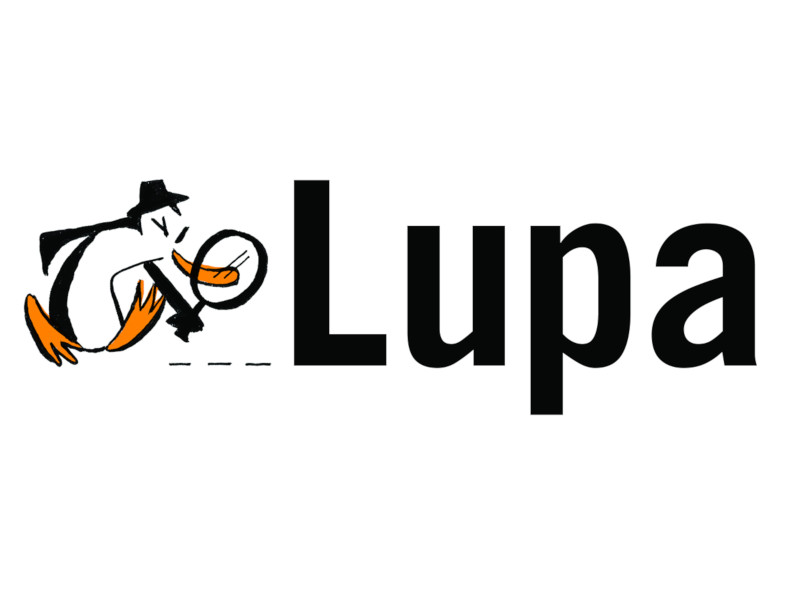

Real ou Falso?
A internet nos possibilitou a disseminação rápida e acesso facilitado a informações e notícias.
Mas assim como facilitou o acesso a informações, também facilitou a disseminação de desinformações.
Ao receber uma notícia, é muito importante estar atento à fonte e nos certificar da sua veracidade!
Esta tarefa de diferenciar o que é real do que é falso pode ser difícil...
Para te ajudar nesta tarefa, indicamos abaixo algumas das principais agências de checagem de fatos.
